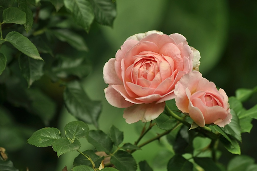
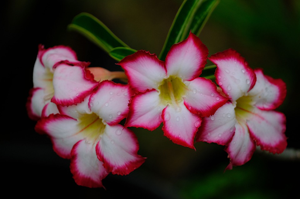
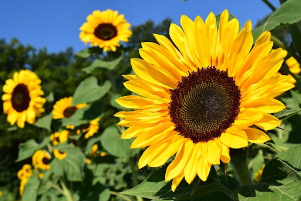

Bunga

Bunga adalah bahasa yang universal, mereka biasa tumbuh di taman-taman, atau bahkan di pinggir jalan. Bunga tidak hanya sebagai hiasan di taman saja namun juga bisa di mempercantik rumah, bahkan dijadikan hadiah.
Bunga sendiri sudah lama dikagumi dan dimanfaatkan oleh manusia. Tidak hanya itu, bunga juga sebagai objek asmara, ritual,religi, obat-obatan, bahkan sumber makanan. Tulisan di bawah ini akan membahas lebih lanjut tentang bunga dan beberapa contohnya.
Adenium

Adenium obesum ditanam sebagai tanaman hias di daerah yang beriklim sedang. Banyak sekali hibrida yang telah dikembangkan. Adenium disenangi karena bunganya yang berwarna-warni dan juga kelopaknya yang tebal dan tidak biasa. Mereka bisa ditanam selama bertahun-tahun dalam pot dan biasanya digunakan untuk bonsai.
Adenium juga dikenal dengan mawar gurun. Di Thailand, adenium juga dikenal dengan kalachuchi bangkok. Karena kemiripannya dengan tanaman kamboja mini dan sering digunakan sebagai bonsai, Adenium obesum juga dikenal sebagai kamboja Jepang.
Matahari

Bunga matahari berasal dari Amerika. Biji bunga matahari awalnya ditemukan di Meksiko berasal dari tahun 2100 SM. Penduduk asli Amerika menanam bunga matahari sebagai tanaman yang berasal dari Meksiko. Pada abad ke -16, keturunan bunga matahari yang pertama dibawa dari amerika ke Eropa oleh para penjajah. Disebut bunga matahari karena bunga ini selalu condong ke arah matahari.
Sebelum mekar, bunga matahari akan miring di siang hari untuk menghadap matahari. Mereka melakukan itu untuk mendapat lebih banyak pasokan sinar matahari. Pasokan sinar matahari sangat penting dalam proses fotosintesis. Ketika dewasa, bunga matahari akan selalu menghadap ke timur, arah matahari terbit, untuk selalu dihangatkan oleh matahari.